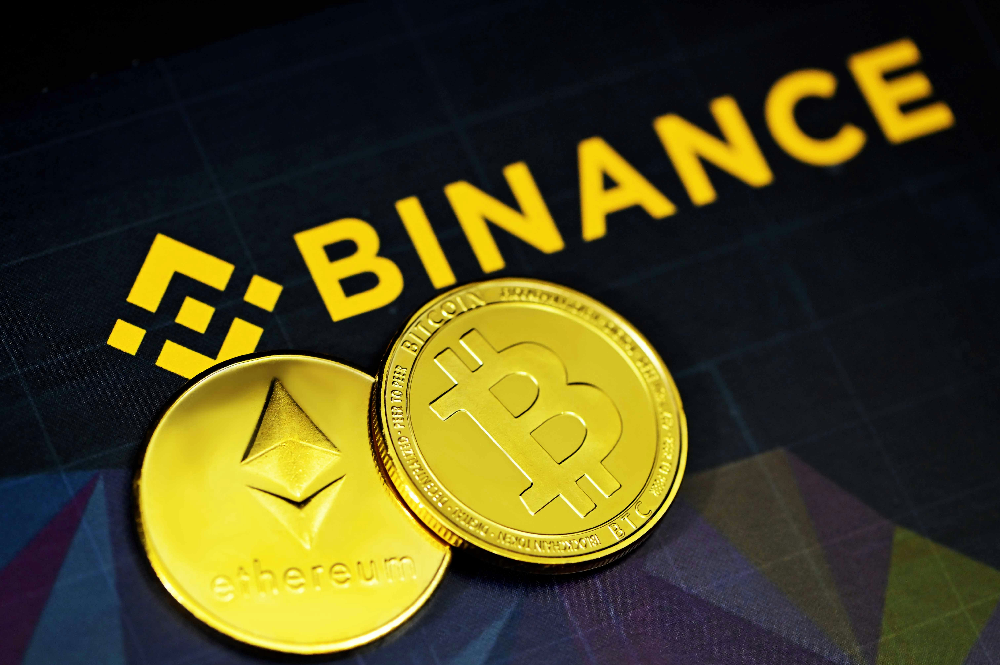

JAKARTA, DFORUM — Bursa mata uang kripto terbesar di dunia, Binance, resmi membekukan aset senilai 3 miliar dolar AS atau sekitar Rp54,45 triliun. Langkah ini diambil setelah perusahaan mengalami insiden keamanan siber yang diperkirakan berdampak hingga 6,3 miliar dolar AS atau setara Rp114,34 triliun. Insiden tersebut diklaim sebagai peretasan terbesar dalam sejarah industri kripto.
Juru bicara Binance menyatakan bahwa perusahaan tengah berupaya menangani insiden tersebut secara maksimal. Sebagai langkah pencegahan, seluruh aktivitas penyetoran dan penarikan dana (withdrawal) dihentikan sementara. “Binance telah mengonfirmasi adanya insiden keamanan dan tim kami bekerja sepanjang waktu untuk menyelesaikannya,” kata juru bicara Binance, dikutip dari FOX Business.
Pihak Binance juga memastikan bahwa dana pengguna tetap aman. Perusahaan berjanji akan menanggung seluruh kerugian finansial yang timbul akibat insiden tersebut. “Pengguna tidak akan menanggung dampak finansial dari insiden ini. Binance akan menanggung seluruh kerugian,” ujarnya.
Dugaan Awal: Kelalaian Perangkat Karyawan
Berdasarkan unggahan resmi di platform X, penyelidikan awal menunjukkan bahwa insiden keamanan tersebut mungkin melibatkan laptop milik seorang insinyur DevOps yang telah disusupi. Kondisi tersebut diduga memungkinkan penyerang mengakses sebuah kontainer layanan dan mengajukan transaksi penarikan tanpa izin.
Meski demikian, Binance menegaskan belum menemukan bukti bahwa kunci privat (private key) dompet kripto mereka telah disusupi. Pendiri sekaligus pemegang saham mayoritas Binance, Changpeng Zhao (CZ), menduga insiden tersebut merupakan serangan siber. “Dana pengguna aman! Ini memang terlihat seperti peretasan terhadap Binance,” tulis CZ di akun X pribadinya.
Kolaborasi Industri Kripto
CZ juga menyampaikan apresiasi kepada penerbit stablecoin Tether dan Circle yang bergerak cepat membekukan aset terdampak. Berdasarkan laporan, Tether telah membekukan sekitar 971 juta dolar AS, sedangkan Circle membekukan sekitar 823 juta dolar AS. Tether kemudian menyatakan total aset yang dibekukan terkait insiden ini mencapai hampir 1,57 miliar dolar AS.
Sementara itu, perusahaan kripto Ripple juga turut membekukan dana sekitar 200 juta dolar AS dan menyatakan tengah berkoordinasi dengan pihak terkait. Salah satu pendiri Binance, Yi He, menegaskan bahwa Binance akan menanggung seluruh kerugian akibat peretasan ini melalui dana perlindungan aset pengguna atau Secure Asset Fund for Users (SAFU), serta dana perusahaan.
Dampak Terhadap Pasar Kripto
Pengumuman insiden ini langsung memicu kepanikan di pasar global. Mengutip Reuters, harga Bitcoin turun sekitar 2 persen ke level terendah dalam enam pekan terakhir, yaitu 77.646 dolar AS. Harga Ether juga turun sekitar 2 persen ke level terendah dalam dua bulan ke posisi 2.238,76 dolar AS.
Berdasarkan data CoinGecko, BNB, aset kripto asli Binance, merosot lebih dari 8 persen dalam 24 jam menjadi 694 dolar AS. Binance menyatakan akan segera menerbitkan pembaruan laporan Proof of Reserves setelah seluruh proses penyelidikan dan pemulihan sistem selesai.
Sumber Berita: Kompas.com - Ini Langkah Binance Usai Dibobol Rp 114 Triliun